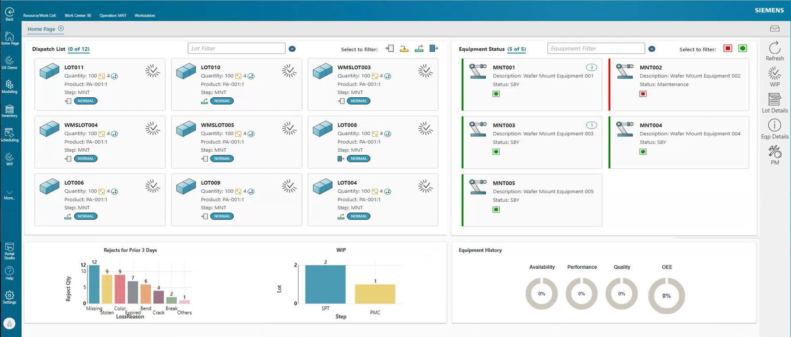

The Home Page provides a centralized display of real-time shop floor activities and summaries that help you view the overall manufacturing process. The page offers an interactive experience with visibility and tool-tip navigation, which simplifies information into charts, shortcuts, and dynamically displays updated shop floor changes to provide accurate time-based information.
To ensure that the Home Page appears as the default display with your preferred data configurations, it is recommended to set up the Work Center, Employee, and Line Assignment Settings. The selection of appropriate values helps to narrow down the data displayed on the Home Page. The following explanation generally describes how the selection affects the data displayed:
| • | The selection of the Resource Group field in the Work Center modeling page helps to identify the data displayed in the Dispatch List section. |
| • | Configuring the Line Assignment Settings helps to specify the information displayed in both the Dispatch List and Equipment List sections. Refer to the "Dispatch List and "Equipment Status" section for explanation of how the application displays data based on the line assignment setting. |
You must select a Resource Group in the Work Center modeling page. Follow these steps to setup the Work Center:
| 1. | Log in to Opcenter Execution Semiconductor. |
| 2. | Open the Work Center modeling page by selecting the Modeling > Main button. The Work Center page appears within the Modeling page. |
| 3. | For new instance, enter name in the Work Center field. |
| 4. | Select a resource group in the Resource Group field. The selection of Resource Group field in this page identifies data displayed in the Dispatch List section of Home Page. |
| 5. | Click Save. The application saves the modeling object and displays a success message. |
You must select the Work Center, Operation and Home Page fields in the Employee modeling page. Follow these steps to setup Employee modeling object:
| 1. | Log in to Opcenter Execution Semiconductor. |
| 2. | Open the Employee modeling page by selecting the Modeling > Main button. The Employee page appears within the Modeling page. |
| 3. | For new instance, enter the name in the Employee field. |
| 4. | In the Details section, select the Work Center that previously configured. The selection of Work Center identifies data displayed in the Dispatch List section of Home Page. |
| 5. | In the same Details section, select the Operation field. The selection of operation field identifies data displayed in the Equipment Status section of Home Page. |
| 6. | In the Portal section, select "scsLandingPage_vp" at the Home Page field if it is not yet configured. |
| 7. | Enter optional information according to your business requirements. Refer to the field definitions table for information on the optional fields. |
| 8. | Click Save. The application displays a success message. |
The Home Page can be configured to display specific resources, spec, operation or work center based on the line assignment setting. Line assignment settings help to limit the total number of objects displayed on the Home Page, else you may have hundreds of objects to be displayed.
Follow these step to change or update your line assignment setting:
| 1. | Log in to Opcenter Execution Semiconductor. |
| 2. | Click the Settings button located at the bottom-left menu bar. Then click Set Line Assignment link. The Set Line Assignment pop-up appears. |
| 3. | Select values from one or more of the following fields: |
| • | Work Center. The Work Center drop-down value is filtered by your user ID and factory. |
| • | Operation. Operation drop-down value is filtered by work center. |
| • | Spec. Spec drop-down value is filtered by Operation. |
| • | Resource/Work Cell.Resource/Work Cell drop-down value is filtered by Spec and Work Center. |
| • | Workstation. Workstation drop-down value is filtered by Resource/Work Cell, Spec and Work Center. |
| 4. | Optionally, you may select the check-box Don't show this when I log on. When selected, the application does not display the Set Line Assignment page when you log on. If you clear the check box, the application displays the Set Line Assignment page at log on, but only if your system administrator set the page to be visible to you on log-on. |
| 5. | Click Set Line Assignment. The application saves your changes, closes the pop-up, and displays your updated assignments in the global header. When you select the Home Page button on the top-left menu bar, the home page appears with the configured line assignment setting. |
Refer to the Opcenter Execution Core Shop Floor Guide for information on line assignment.
This image shows an example of the Home Page.

The Home Page contains the following areas:
| 1. | The top left of the page contains Dispatch List activity and status. |
| 2. | The top right of the page contains Equipment Status details. |
| 3. | The bottom left of the page contains the Rejects for Prior 3 days bar. |
| 4. | The bottom middle of the page contains the information on WIP Chart. |
| 5. | The bottom right of the page contains Equipment History. |
The following topics describe these areas.
The Dispatch List card displays the top 9 lots that are in processing states (either Move In, Track In, Track Out, or Move Out).
By default, this section displays lot based on the line assignment setting. For example, if work center MNT is selected in the line assignment setting, the dispatch list tiles will only show the top 9 lots assigned to MNT. The following explains how the application display data based on the line assignment setting:
| • | Resource: If Resource is set in the line assignment, Dispatch List shows lots that can be run on this resource. |
| • | Spec: If Spec is set in the line assignment, Dispatch list shows lots within the current Spec. |
| • | Operation: If Operation is set in the line assignment, Dispatch list shows lots where the current WIP spec is linked with this operation. |
| • | Work Center: If Work Center is set in the line assignment, Dispatch List displays lots where current operation link to the selected work center. |
To search for lots, simply enter the lot name in the Lot Filter field. Additionally, lots can be further filtered based on their processing state (Move In, Track In, Track Out, or Move Out) by selecting the relevant filter icons.
Each tile displays information for the dispatch lots. The information includes:
| • | Name |
| • | Quantity (Quantity of die in lot) |
| • | Quantity 2 (Quantity of wafers in lot) |
| • | Product |
| • | Current WIP Step |
| • | Process Type icon, and |
| • | Lot Hold Status |
Tiles highlighted in red color indicates that the lot is on hold.
The equipment status section displays tiles of equipment information that includes the description of equipment, manufacturing status, and the number of WIP lots assigned to the equipment. The list of equipment displayed in this section can be set in the Work Center modeling object by filtering the Resource Group drop-down. You can further filter the Resource / Work Center based on our requirement using the option available in the Set Line assignment settings.
When you first logged into the Home Page, Equipment Status section displays criteria based on the line assignment setting. The following explains how application displays data based on the line assignment setting:
| • | Resource: If Resource is set in the line assignment setting, Equipment Status shows list of selected resource. |
| • | Spec: If Spec is set in the line assignment setting, Equipment Status shows equipment within the selected Spec. |
| • | Operation: If Operation is set in the line assignment, Equipment Status shows equipment that are currently associated to Operation > WIP spec > Equipment Group. |
| • | Work Center: If Work Center is set in the line assignment, the section resolves the resource group associated with the selected work center. |
To search for equipment, simply enter the equipment name in the Equipment Filter field. Additionally, equipment can be further filtered based on availability by selecting the Availability Filter icon.
The tiles display the top 6 equipment based on line assignment settings or filtered criteria, and they are sorted based on the highest priority from top left to right based on the selected lot tile.
This image shows an example of the Equipment Status section on the Home Page.
The color of the tiles represents the availability status of the equipment, where green indicates that the equipment is available, and red indicates that it is unavailable. The number displayed at the right corner of each tile represents the number of WIP lots assigned to the equipment. Refer to the "Home Page Display Definitions" for information.
Clicking on an Equipment Status tile allows you to populate the "PM" slider panel located at the right-command bar. Populating the PM slider panel will automatically populate the Equipment Status section at the bottom right of the page. This functionality is only available if Industry Solutions are installed.
The Rejects for Prior 3 days bar chart illustrates the quantity of rejected lots (Y-axis) with their respective loss reasons (X-axis) for the past 3 days. The bar chart is populated based on the Work Center or Operation set in the line assignment setting. Data displayed in this chart is obtained from the "Lot Reject" page.
Refer to the "Home Page Display Definitions" for information.
The WIP Bar chart shows WIP step name (X-axis) and the quantity of lots (Y-axis) at the current processing state. The data displayed in this chart are based on the Resource and Operation setup in the line assignment setting.
The chart dynamically loads based on the number of lots at each steps. Click the Refresh button to obtain the latest information. Refer to the "Home Page Display Definitions" for information.
Equipment History section displays charts of detailed OEE metrics based on the selected resource in line assignment setting. OEE (Overall Equipment Effectiveness) represents the true productive time for an equipment relative to its actual capacity. This feature helps any system administrator to configure and evaluate how effectively a manufacturing resource is performing based on four main matrices which are Availability, Performance, Quality and OEE.
| Note: | The functionality of Equipment History section is available only when the Industry Solutions workspace is installed. Refer to the Opcenter Execution Core Industry Solutions User Guide for information. |
This image shows an example of Equipment History charts in the Home Page.

This table defines the cards and tiles displayed on the Home Page.
|
Field |
Definition |
Type |
|||||||||
|---|---|---|---|---|---|---|---|---|---|---|---|
|
Dispatch List Card |
|||||||||||
|
Lot Name |
Name of the lot to which the instance applies. |
Display Only |
|||||||||
|
Qty |
Quantity of die in lot. |
Display Only |
|||||||||
|
Qty 2 |
Number of wafers in lot. |
Display Only |
|||||||||
|
Product |
Product used to start the lot. The application uses the product assigned to the manufacturing order if Product is blank. |
Display Only |
|||||||||
|
Step |
Current spec at which lot resides. Spec is depending on the line assignment's setting. |
Display Only |
|||||||||
|
Process Type Icon |
Status of the process type. Possibility status includes:
: Pending for Track In.
|
Display Only |
|||||||||
|
Priority Code |
Indicates processing priority of the lot. The application displays assigned priority code based on modeling. The normal priority code will be used if none selected. |
Display Only |
|||||||||
|
On hold status |
Indicates lot is currently on hold. The tile will show red highlight indicator. |
Display Only |
|||||||||
|
|
Icon button to open WIP Main Advanced Overview page. |
Optional |
|||||||||
|
Equipment Status |
|||||||||||
|
Equipment Name |
Name of the equipment or machine. |
Display Only |
|||||||||
|
Description |
Description of the equipment. |
Display Only |
|||||||||
|
Status |
Status of the equipment or machine. Possible status includes:
|
Display Only |
|||||||||
|
Numbered Tag |
Number of lots assigned to the equipment. Refer to "Equipment Details Slide-Out Definitions" for information. |
Display Only |
|||||||||
|
Rejects for Prior 3 Days chart |
|||||||||||
|
Loss Reason |
Reason or description of the loss. |
Display Only |
|||||||||
|
Reject Qty |
Quantity of lot that has been rejected for the assigned Work Center and/or Operation. |
Display Only |
|||||||||
|
WIP Chart |
|||||||||||
|
Step |
Name of the WIP Step. |
Display Only |
|||||||||
|
Lot |
Quantity of the lot at the current Step. |
Display Only |
|||||||||
|
Equipment History (Industry Solution Installed) |
|||||||||||
|
Availability |
Indicates the equipment's availability history. Availbilty is calculated based on data from is OEEResourceDetailsByShift table and the Calendar Shift grid on the Mfg Calendar modeling object. The availability of a resource is calculated based on the formula Availability = Operating Time / Planned Production. Note: This field is available only when the Industry Solutions workspace is installed. Refer to the Opcenter Execution Core Industry Solutions User Guide for information. |
Optional |
|||||||||
|
Performance |
Indicates performance of the resource. The performance of a resource is calculated based on the formula Performance = (Ideal Cycle Time * Total Quantity) / (Operating Time). Note: This field is available only when the Industry Solutions workspace is installed. Refer to the Opcenter Execution Core Industry Solutions User Guide for information. |
Display Only |
|||||||||
|
Quality |
Indicates the quality of the resource. The quality of a resource is calculated based on the formula Quality = Good Quantity / Total Quantity, where:
Note: This field is available only when the Industry Solutions workspace is installed. Refer to the Opcenter Execution Core Industry Solutions User Guide for information. |
Display Only |
|||||||||
|
OEE |
Indicates the Overall Equipment Effectiveness of the equipment which represents the productive time for an equipment relative to its actual capacity. The formula for calculating OEE is the product of the other elements:
Note:This field is available only when the Industry Solutions workspace is installed. Refer to the Opcenter Execution Core Industry Solutions User Guide for information. |
Display Only |
|||||||||
 : Pending for Move In.
: Pending for Move In. : Pending for Track Out.
: Pending for Track Out.  : Pending for Move Out.
: Pending for Move Out.
 : PM (Preventative Maintenance) is required.
: PM (Preventative Maintenance) is required.This table defines the buttons in the slide-out panel on the Home Page.
|
Button |
Click this button to . . . |
|
Refresh |
Refresh the entire Home Page contents. It is recommended to refresh the page to load the latest information. Generate item identifiers automatically. |
|
WIP |
Display the icon button that leads to WIP Main Advanced page. |
|
Lot Details |
Display the details of lot based on the selected tiles in Dispatch List. You must select a Dispatch List tile before selecting this button. |
|
Eqp Details |
Display the equipment details based on the selected Equipment Status's tiles. You must select an Equipment Status tile before selecting this button. Refer to "Equipment Details Slide-Out Definitions" for more information. |
|
PM |
Display Preventive Maintenance (PM) information for the selected equipment tiles. You must select an Equipment Status tile before selection this button. |
Equipment Details button is enabled when an Equipment Status tile with assigned lot is selected (tile with numbered tag).
This table defines the Equipment Details Slide-Out Panel on the Home Page.
|
Field |
Definition |
Type |
|---|---|---|
|
Lot Details |
Displays list of lots assigned to the equipment. |
Display Only |
|
Lot Name |
Name or ID of the lot. |
Display Only |
|
Quantity |
Qty 1 : Quantity of die in lot. Qty 2 : Quantity of wafers in lot. |
Display Only |
|
Product |
Product used to start the lot. The application uses the product assigned to the manufacturing order if Product is blank. |
Display Only |
|
Step |
Current step at which lot resides. |
Display Only |
|
Material Details |
Displays list of materials loaded on the selected equipment. |
Display Only |
|
Material Name |
Material name or ID. |
Display Only |
|
Quantity |
Qty 1 : Quantity of materials left that can be consumed against a production lot's Qty 1. Qty 2 : Quantity of materials left that can be consumed against a production lot's Qty 2. |
Display Only |
|
Material Type |
Type of material. This field helps to differentiate the types of Material Parts or Products used for a lot. |
Display Only |
|
Exp Date |
Manufacturer's expiry date for the material. |
Display Only |
|
Tool Details |
Displays list of tools loaded on the selected equipment. |
Display Only |
|
Tool Name |
Name or ID of the tool. |
Display Only |
|
Object Category |
Manufacturing operation associated with the tool. For example, Assembly. |
Display Only |
The application uses queries to call for data to be displayed in the Home Page. This table lists the name of each queries used in this page.
|
Home Page Section Name |
Queries Name |
|---|---|
|
Dispatch List |
scsGetDashboardDispatchListByResource (Designer Query) |
|
Equipment Status |
scsGetDashboardEquipment (Designer Query) |
|
Rejects for Prior 3 Days |
scsGetDashboardLotReject (Designer Query) |
|
WIP Chart |
scsGetDashboardWipData (Designer Query) |
|
Equipment History (OEE Chart) |
OEE Chart is based on the OEE details within 1 year period. |